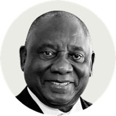

South Africa · Key player

Cyril Ramaphosa
President of South Africa and ANC president
Updated · 10 coalition pieces tracked
Who is Cyril Ramaphosa?
Cyril Ramaphosa (President of South Africa and ANC president) is one of the key players in the coalition talks after South Africa’s 4 November 2026 local government elections.
What has Cyril Ramaphosa said about the coalition talks?
- Insiders told the Sunday Times he asked the ANC to explore a Johannesburg deal without the DA; the ANC denies he stated a preference. Story: Joburg will elect its mayor on Friday as parties finish their deal
- In public, asks every party to negotiate in good faith and form councils quickly. A report from unnamed insiders says he wants the DA kept out of Johannesburg; the ANC denies it. Story: In public, Ramaphosa asks for good faith. In private, insiders say he wants the DA kept out of Joburg
- Says hung councils are not a failure of democracy, and asks parties to negotiate in good faith rather than fight over power. Story: Will the coalition fights break the national unity government?
What is Cyril Ramaphosa’s latest on the coalitions?
On 26 November 2026, TimesLIVE: Ramaphosa says he’s ‘not resigning’ after election setback. TimesLIVE reports Ramaphosa says he is 'not resigning' after the ANC's election setback.
Every piece we track, newest first
TimesLIVE · Article Ramaphosa says he’s ‘not resigning’ after election setbackTimesLIVE reports Ramaphosa says he is 'not resigning' after the ANC's election setback.
thenational.co.za · Reported Ramaphosa admits shortcomings in GBV action as 16 days of activism beginsReported by thenational.co.za.
News24 · Reported Ramaphosa wins: Phala Phala impeachment report set asideReported by News24.
Yahoo News Singapore · Reported South Africa's Ramaphosa wins court case to overturn 'Farmgate' panel reportReported by Yahoo News Singapore.
EWN · Reported SA’s exclusion from AGOA an opportunity to find new markets – RamaphosaReported by EWN.
EWN · Reported Ramaphosa insists Eskom is being restructured, not unbundled or privatisedReported by EWN.
The South African Star · Reported Mr Cyril Ramaphosa: South Africa cannot afford another promise while women continue to dieReported by The South African Star.
Sunday Times · Reported Ramaphosa urges ANC to avoid DA in Johannesburg coalitionNot said in public. The Sunday Times, citing unnamed insiders, reported that Ramaphosa told a closed ANC meeting to explore a Johannesburg coalition without the DA. ANC spokesperson Mahlengi Bhengu dismissed claims that he had stated a preference.
EWN · Newsletter Ramaphosa urges political parties to cooperate on coalition discussionsIn his weekly newsletter, Ramaphosa told parties to cooperate in good faith so councils can be formed and start working, and said councillors must find common ground from the start, whatever their party differences.
The Citizen · Speech Ramaphosa warns parties ahead of coalition talksSpeaking at the IEC results announcement, Ramaphosa said hung councils are not a failure of democracy. He urged parties to negotiate in good faith rather than fight over positions and power, and warned against delays in forming councils.
Preamble summarises published reporting and links to every original. Cyril Ramaphosa does not write for Preamble, and this page is not endorsed by them.